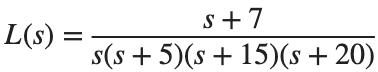
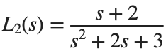

Root Locus
실행 조건
MATLAB · Control System Toolbox
학습 목표
Gain 하나를 고르는 문제가 Pole 위치와 Time Response에 어떻게 이어지는지 확인합니다.
Gain과 Closed-loop Pole
시작 조건

. 을 사용합니다.진행 방법
- Root Locus를 그리고 각 K에서 feedback(K*L,1)의 Pole을 별도 기호로 표시하세요.
- 각 Pole의 실수부와 안정 여부를 표에 기록하세요.
- 기준 조건 에 비해 Pole 이동과 응답 변화의 예상을 적으세요.
남길 결과
- Root Locus 그림 1개와 K별 Pole 표.
s=tf('s'); L=(s+7)/(s*(s+5)*(s+15)*(s+20)); figure; rlocus(L);
for k=[100 500 1000], disp(k); disp(pole(feedback(k*L,1))); end
결과 기록·자가 점검
K | |
Closed-loop Pole | |
최대 실수부 | |
안정 여부 |
확인할 점
- Root Locus의 점과 직접 계산한 Closed-loop Pole이 같은가?
- 복소근의 켤레 관계가 유지되는가?
Time Response로 예상 확인
시작 조건
같은 모델·Gain에 s의 Unit Step을 적용합니다.
진행 방법
- 안정한 경우에만 Overshoot·Settling Time을 구하세요.
- 가장 느린 Pole 쌍과 Time Response의 진동·감쇠를 연결해 설명하세요.
 보다 크거나 작은 값 하나를 추가하고 예상을 검증하세요.
보다 크거나 작은 값 하나를 추가하고 예상을 검증하세요.
남길 결과
- 4조건까지 포함한 응답 그림과 성능 표.
s=tf('s'); L=(s+7)/(s*(s+5)*(s+15)*(s+20)); t=linspace(0,8,1601)';
T=feedback(500*L,1); figure; step(T,t); xlabel('Time [s]'); grid on
% TODO: 나머지 두 Gain의 응답을 추가하세요.
결과 기록·자가 점검
K | |
Overshoot [%] | |
Settling Time [s] | |
예상과 일치한 점 |
확인할 점
- 불안정한 경우 수렴 지표를 억지로 산출하지 않았는가?
- Pole에 근거한 예상과 실제 관측을 나누어 적었는가?
다른 모델에 같은 절차 적용
시작 조건

, 을 사용합니다.진행 방법
- L2의 Root Locus·Pole 표·Step plot을 같은 형식으로 만드세요.
- 고차 모델 L과 L2에서 Gain 변화의 양상이 같은지 비교하세요.
- 한 모델에서 얻은 결론을 다른 모델에 그대로 적용할 수 있는지 설명하세요.
남길 결과
- 두 모델의 비교 요약 표와 짧은 해석.
s=tf('s'); L2=(s+2)/(s^2+2*s+3);
for k=[.5 2 10], disp(k); disp(pole(feedback(k*L2,1))); end
결과 기록·자가 점검
모델 | |
K | |
Pole | |
Overshoot [%] | |
Settling Time [s] |
확인할 점
- 각 모델마다 Closed-loop 식을 새로 구성했는가?
- 같은 Gain 숫자만으로 두 시스템의 성능을 동일시하지 않았는가?